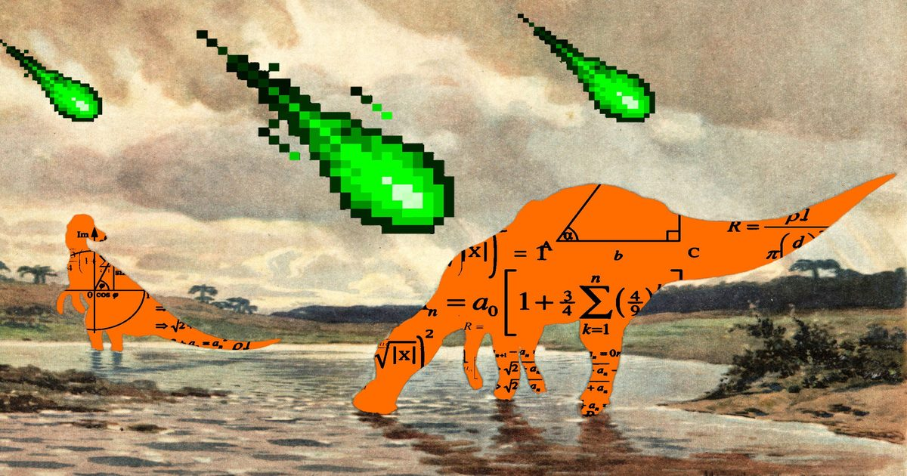

Прорыв в области ИИ сделал десятилетия исследований в области компьютерных наук «неактуальными»
Anthropic и OpenAI говорят, что они опровергли ключевой принцип информатики.
Исследователи борются с падением, но также чувствуют себя «перевозбужденными кроликами», рассматривая новые вопросы для изучения.